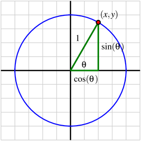

Section2.4Derivatives of other trigonometric functions¶ permalink
{In this section, we strive to understand the ideas generated by the following important questions:
What are the derivatives of the tangent, cotangent, secant, and cosecant functions?
How do the derivatives of \(\tan(x)\), \(\cot(x)\), \(\sec(x)\), and \(\csc(x)\) combine with other derivative rules we have developed to expand the library of functions we can quickly differentiate?
}
Subsection2.4.1Introduction
One of the powerful themes in trigonometry \knownindex{\lt main>trigonometry\lt /main>} is that the entire subject emanates from a very simple idea: locating a point on the unit circle.
Figure2.4.1The unit circle and the definition of the sine and cosine functions.
Because each angle \(\theta\) corresponds to one and only one point \((x,y)\) on the unit circle, the \(x\)- and \(y\)-coordinates of this point are each functions of \(\theta\). Indeed, this is the very definition of \(\cos(\theta)\) and \(\sin(\theta)\): \(\cos(\theta)\) is the \(x\)-coordinate of the point on the unit circle corresponding to the angle \(\theta\), and \(\sin(\theta)\) is the \(y\)-coordinate. From this simple definition, all of trigonometry is founded. For instance, the fundamental trigonometric identity\knownindex{\lt main>trigonometry\lt /main>\lt sub>fundamental trigonometric identity\lt /sub>},
\[
\sin^2(\theta) + \cos^2(\theta) = 1,
\]
is a restatement of the Pythagorean Theorem, applied to the right triangle shown in Figure 2.4.1.
We recall as well that there are four other trigonometric functions, each defined in terms of the sine and/or cosine functions. These six trigonometric functions together offer us a wide range of flexibility in problems involving right triangles. The tangent function \knownindex{\lt main>tangent\lt /main>} is defined by \(\tan(\theta) = \frac{\sin(\theta)}{\cos(\theta)}\), while the cotangent function is its reciprocal: \(\cot(\theta) = \frac{\cos(\theta)}{\sin(\theta)}\). The secant function is the reciprocal of the cosine function, \(\sec(\theta) = \frac{1}{\cos(\theta)}\), and the cosecant function is the reciprocal of the sine function, \(\csc(\theta) = \frac{1}{\sin(\theta)}\).
Because we know the derivatives of the sine and cosine function, and the other four trigonometric functions are defined in terms of these familiar functions, we can now develop shortcut differentiation rules for the tangent, cotangent, secant, and cosecant functions. In this section's preview activity, we work through the steps to find the derivative of \(y = \tan(x)\).
Preview Activity
Consider the function \(\ds f(x) = \tan(x)\), and remember that \(\ds \tan(x) = \frac{\sin(x)}{\cos(x)}\).
What is the domain of \(f\)?
Use the quotient rule to show that one expression for \(f'(x)\) is
\[
f'(x) = \frac{\cos(x)\cos(x) + \sin(x)\sin(x)}{\cos^2(x)}.
\]
What is the Fundamental Trigonometric Identity? How can this identity be used to find a simpler form for \(f'(x)\)?
Recall that \(\sec(x) = \frac{1}{\cos(x)}\). How can we express \(f'(x)\) in terms of the secant function?
For what values of \(x\) is \(f'(x)\) defined? How does this set compare to the domain of \(f\)?
Subsection2.4.2Derivatives of the cotangent, secant, and cosecant functions
In Preview Activity , we found that the derivative of the tangent function can be expressed in several ways, but most simply in terms of the secant function. Next, we develop the derivative of the cotangent function.
Let \(g(x) = \cot(x)\). To find \(g'(x)\), we observe that \(g(x) = \frac{\cos(x)}{\sin(x)}\) and apply the quotient rule. Hence
By the Fundamental Trigonometric Identity, we see that \(g'(x) = -\frac{1}{\sin^2(x)}\); recalling that \(\csc(x) = \frac{1}{\sin(x)}\), it follows that we can most simply express \(g'\) by the rule
\[
g'(x) = -\csc^2(x).
\]
Note that neither \(g\) nor \(g'\) is defined when \(\sin(x) = 0\), which occurs at every integer multiple of \(\pi\). Hence we have the following rule.
{
Cotangent Function: \knownindex{\lt main>derivative\lt /main>\lt sub>cotangent\lt /sub>} For all real numbers \(x\) such that \(x \ne k\pi\), where \(k = 0, \pm 1, \pm 2, \ldots\),
\[
\frac{d}{dx} [\cot(x)] = -\csc^2(x).
\]
}
Observe that the shortcut rule for the cotangent function is very similar to the rule we discovered in Preview Activity for the tangent function.
{
Tangent Function: \knownindex{\lt main>derivative\lt /main>\lt sub>tangent\lt /sub>} For all real numbers \(x\) such that \(x \ne \frac{(2k+1)\pi}{2}\), where \(k = \pm 1, \pm 2, \ldots\),
\[
\frac{d}{dx} [\tan(x)] = \sec^2(x).
\]
}
In the next two activities, we develop the rules for differentiating the secant and cosecant functions.
\(h(x) = \sec(x)\) is defined for all \(x\) for which \(\cos(x) \ne 0\). Hence the domain of \(h\) is all real numbers \(x\) such that \(x \ne \frac{k\pi}{2}\), where \(k = \pm 1, \pm 2, \ldots\).
By the quotient rule,
\[
h'(x) = \frac{0 - 1 (-\sin(x))}{\cos^2(x)} = \frac{\sin(x)}{\cos^2(x)}.
\]
Observe that \(h'(x) = \frac{\sin(x)}{\cos^2(x)} = \frac{1}{\cos(x)} \cdot \frac{\sin(x)}{\cos(x)},\) so
\[
h'(x) = \sec(x) \tan(x).
\]
The derivative \(h'(x)\) is, like \(h(x)\), defined for all values of \(x\) for which \(\cos(x) \ne 0\). Therefore, \(h\) and \(h'\) have the same domain: all real numbers \(x\) such that \(x \ne \frac{k\pi}{2}\), where \(k = \pm 1, \pm 2, \ldots\).
\(p(x) = \csc(x)\) is defined for all \(x\) for which \(\sin(x) \ne 0\). Hence the domain of \(h\) is all real numbers \(x\) such that \(x k\pi\), where \(k = 0, \pm 1, \pm 2, \ldots\).
By the quotient rule,
\[
h'(x) = \frac{0 - 1 \cdot (\cos(x))}{\sin^2(x)} = -\frac{\cos(x)}{\sin^2(x)}.
\]
Observe that \(h'(x) = -\frac{\cos(x)}{\sin^2(x)} = -\frac{1}{\sin(x)} \cdot \frac{\cos(x)}{\sin(x)},\) so
\[
h'(x) = -\csc(x) \cot(x).
\]
The derivative \(p'(x)\) is, like \(p(x)\), defined for all values of \(x\) for which \(\sin(x) \ne 0\). Therefore, \(p\) and \(p'\) have the same domain: all real numbers \(x\) such that \(x \ne k\pi\), where \(k = 0, \pm 1, \pm 2, \ldots\).
The quotient rule has thus enabled us to determine the derivatives of the tangent, cotangent, secant, and cosecant functions, expanding our overall library of basic functions we can differentiate. Moreover, we observe that just as the derivative of any polynomial function is a polynomial, and the derivative of any exponential function is another exponential function, so it is that the derivative of any basic trigonometric function is another function that consists of basic trigonometric functions. This makes sense because all trigonometric functions are periodic, and hence their derivatives will be periodic, too.
As has been and will continue to be the case throughout our work in Chapter 2, the derivative retains all of its fundamental meaning as an instantaneous rate of change and as the slope of the tangent line to the function under consideration. Our present work primarily expands the list of functions for which we can quickly determine a formula for the derivative. Moreover, with the addition of \(\tan(x)\), \(\cot(x)\), \(\sec(x)\), and \(\csc(x)\) to our library of basic functions, there are many more functions we can differentiate through the sum, constant multiple, product, and quotient rules.
Let \(g(r) = \displaystyle \frac{r \sec(r) }{5^r}\). Find \(g'(r)\).
When a mass hangs from a spring and is set in motion, the object's position oscillates in a way that the size of the oscillations decrease. This is usually called a damped oscillation. Suppose that for a particular object, its displacement from equilibrium (where the object sits at rest) is modeled by the function
\[
s(t) = \frac{15 \sin(t)}{e^t}.
\]
Assume that \(s\) is measured in inches and \(t\) in seconds. Sketch a graph of this function for \(t \ge 0\) to see how it represents the situation described. Then compute \(ds/dt\), state the units on this function, and explain what it tells you about the object's motion. Finally, compute and interpret \(s'(2)\).
Use the sum and constant multiple rules help you determine \(f'(x)\).
Note that \(p\) is a sum of two functions and that each term in the sum is a product.
Observe that \(h\) is a sum of two functions; the first term in the sum is a quotient, while the second is a product.
What is the overall structure of \(g\)? What is the algebraic structure of the numerator of \(g\)?
Keep in mind that the derivative of position tells us the instantaneous velocity, and observe that differentiating \(s\) will require the quotient rule.
Using the sum and constant multiple rules along with the formulas for the derivatives of \(\sec(x)\) and \(\csc(x)\), we find that
\[
f'(x) = 5 \sec(x)\tan(x) + 2\csc(x)\cot(x).
\]
Therefore, the slope of the tangent line to \(f\) at the point where \(x =\frac{\pi}{3}\) is given by \(m = f'(\frac{\pi}{3}) = 5 \sec(\frac{\pi}{3})\tan(\frac{\pi}{3}) + 2\csc(\frac{\pi}{3})\cot(\frac{\pi}{3}) = 5 \cdot 2 \cdot \sqrt{3} + 2 \cdot \frac{2}{\sqrt{3}} \cdot \frac{1}{\sqrt{3}} = 10\sqrt{3} + \frac{4}{3}.\)
By the sum rule and two applications of the product rule, we have
\begin{align*}
p'(z) \amp = \amp \frac{d}{dz}[z^2\sec(z)] - \frac{d}{dz}[z\cot(z)]\\
\amp = \amp [z^2 \sec(z) \tan(z) + \sec(z) \cdot 2z] - [z(-\csc^2(z)) + \cot(z) \cdot 1]\\
\amp = \amp z^2 \sec(z) \tan(z) + 2z\sec(z) + z\csc^2(z) - \cot(z).
\end{align*}
Thus, the instantaneous rate of change of \(p\) at the point where \(z = \frac{\pi}{4}\) is
\begin{align*}
p'(\frac{\pi}{4}) \amp = \amp (\frac{\pi}{4})^2 \sec(\frac{\pi}{4}) \tan(\frac{\pi}{4}) + 2\frac{\pi}{4}\sec(\frac{\pi}{4}) + \frac{\pi}{4}\csc^2(\frac{\pi}{4}) - \cot(\frac{\pi}{4})\\
\amp = \amp \frac{\pi^2}{16} \sqrt{2} + 2\frac{\pi}{4}\sqrt{2} + \frac{\pi}{4}2 - 1\\
\amp = \amp \frac{\pi^2}{16} \sqrt{2} + \frac{\sqrt{2}\pi}{2} + \frac{\pi}{2} - 1
\end{align*}
Using the sum and constant multiple rules, followed by the quotient rule on the first term and the product rule on the second, we find that
\begin{align*}
h'(t) \amp = \amp \frac{d}{dt}\left[ \frac{\tan (t)}{t^2+1} \right] - 2\frac{d}{dt}\left[e^t \cos(t)\right]\\
\amp = \amp \frac{(t^2+1) \sec^2(t) - \tan(t) (2t)}{(t^2 + 1)^2} - 2(e^t(-\sin(t)) + \cos(t)e^t)\\
\amp = \amp \frac{(t^2+1) \sec^2(t) - 2t \tan(t)}{(t^2 + 1)^2} + 2e^t \sin(t) - 2 e^t\cos(t)
\end{align*}
Note that \(g\) is fundamentally a quotient, so we need to use the quotient rule. But the numerator of \(g\) is a product, so the product rule will be required to compute the derivative of the top function. Executing the quotient rule and proceeding, we find that
\begin{align*}
g'(r) \amp = \amp \frac{5^r \frac{d}{dr}[r \sec(r)] - r\sec(r) \cdot 5^r \ln(5) }{(5^r)^2}\\
\amp = \amp \frac{5^r [r \sec(r) \tan(r) + \sec(r) \cdot 1] - r\sec(r) \cdot 5^r \ln(5) }{(5^r)^2}\\
\amp = \amp \frac{r \sec(r) \tan(r) + \sec(r) - r 5^r \sec(r)}{5^r}
\end{align*}
By the quotient rule,
\[
\frac{ds}{dt} = \frac{e^t \cdot 15 \cos(t) - 15\sin(t) \cdot e^t}{(e^t)^2} = \frac{15\cos(t) - 15\sin(t)}{e^t}.
\]
The function \(\frac{ds}{dt} = s'(t)\) measures the instantaneous vertical velocity of the mass that is attached to the spring. In particular, \(s'(2) = \frac{15\cos(2) - 15\sin(2)}{e^2} \approx -2.69\) inches per second, which tells us at the instant \(t = 2\), the mass is moving downward at an instantaneous rate of 2.69 inches per second.
\item The derivatives of the other four trigonometric functions are
Each derivative exists and is defined on the same domain as the original function. For example, both the tangent function and its derivative are defined for all real numbers \(x\) such that \(x \ne \frac{k\pi}{2}\), where \(k = \pm 1, \pm 2, \ldots\).
\item The above four rules for the derivatives of the tangent, cotangent, secant, and cosecant can be used along with the rules for power functions, exponential functions, and the sine and cosine, as well as the sum, constant multiple, product, and quotient rules, to quickly differentiate a wide range of different functions.
\hrulefill
\begin{exercises}
\item An object moving vertically has its height at time \(t\) (measured in feet, with time in seconds) given by the function \(h(t) = 3 + \frac{2\cos(t)}{1.2^t}\).
What is the object's instantaneous velocity when \(t =2\)?
What is the object's acceleration at the instant \(t = 2\)?
Describe in everyday language the behavior of the object at the instant \(t = 2\).
\item Let \(f(x) = \sin(x) \cot(x)\).
Use the product rule to find \(f'(x)\).
True or false: for all real numbers \(x\), \(f(x) = \cos(x)\).
Explain why the function that you found in (a) is almost the opposite of the sine function, but not quite. (Hint: convert all of the trigonometric functions in (a) to sines and cosines, and work to simplify. Think carefully about the domain of \(f\) and the domain of \(f'\).)